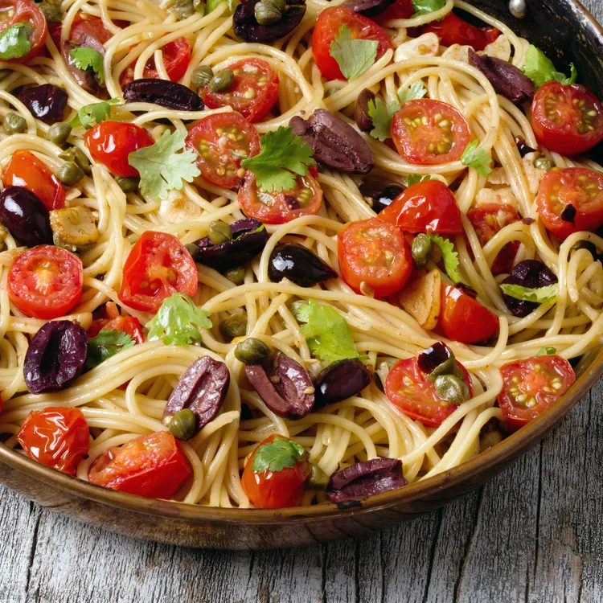

Puttanesca

Description
Puttanesca sauce originated in Naples.
It is made from tomatoes, black olives,
capers, anchovies, onions, garlic,
and herbs, usually oregano and parsley
but sometimes also basil.
It is an easy sauce, briefly cooked,
and is very fragrant and spicy.
Ingredients
- Tomatoes
- Spaghetti
- Garlic
- Olive Oil
- Olives
- Capers
- Canned Tuna
- Oregano
- Cilantro
Preparation
- Cook spaghetti in a pasta pot of boiling salted water (2 1/2 Tbsp salt for 6 qt water) until barely al dente.
- While pasta boils, cook garlic, anchovy paste, red-pepper flakes, 1 tsp salt, and 1/2 tsp pepper in oil in a 12-inch heavy skillet over medium-high heat, stirring occasionally, until fragrant and pale golden, about 2 minutes.
- Add tomato to garlic oil along with olives and capers and simmer, stirring occasionally, until pasta is ready
- Drain pasta and add to sauce. Simmer, turning pasta with tongs, until pasta is al dente, about 2 minutes. Sprinkle with basil.